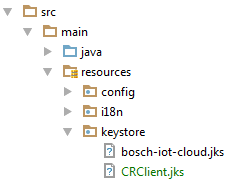

This Getting Started guide will help you set up your environment for XDK and Bosch IoT Cloud development. It will guide you through all the necessary steps using the Bosch IoT XDK Demo App as an example. The app's purpose is to demonstrate how sensor data can be persisted, visualized and used in a cloud environment using the Bosch IoT Suite services.
Note: If you have received this guide prior to the event, here are some steps you can already start with:
1. Start with checking the prerequisites and downloading the necessary software specified below.
2. Get your cloud development environment ready, following the Setup your Cloud Development Environment chapter.
3. Get familiar with the architecture of the Bosch IoT XDK Demo App.
4. Look through the documentation of the used software components specified here.
To complete this guide you will need a computer with local admin privileges to install the necessary software and drivers. See the following list of prerequisites:
Additionally you will have to download the following software (installation will be part of the guide):
You will get the following things from your Hack MC. Please check if you have got everything before starting the tutorial.
The image below shows you the architecture overview of the Bosch IoT XDK Demo App.

The XDK Firmware implements the LWM2M protocol (CoAP-based) to communicate with the LWM2M Server in the cloud. The LWM2M server has an adapter to communicate with the Bosch IoT Things service (formerly known as Central Registry or CR). The Backend of the Bosch IoT XDK Demo App implements a client for the CR Service as a single point of access to the XDK. In addition, the Demo App uses a DB service (MongoDB) to persist sensor data (similar to a time series DB) and implements the Identity Management (IM) Java Client for user authentication & authorization. The Demo App also provides a web-based user interface to display XDK sensor data and to configure the XDK device (e.g. control the LED lamps).
As a first step you will install the XDK Workbench, configure and flash your XDK to work with the Bosch IoT XDK Demo App.
Copy the contents of the micro SD memory card to a sensible location on your system (called ...\yourLocation\ from now on).
Install the XDK Workbench using the installer you can find in ...\yourLocation\install_XDK-1.x.x-...-x86_64.exe. During the installation the XDK device driver will be installed to your system. Make sure you have admin privileges on execution of the installer.
Import the LWM2M firmware into your Workbench
XDK_LWM2M_Firmware.zip as an Existing Project into Workspace.Open the ...\yourLocation\config.txt file and enter the IP of the LWM2M Server and the provided WiFi settings at the appropriate position as shown in the example below, if it is not already set:
SSID = <ProvidedSSID>
PWD = <ProvidedPWD>
LWM2MDEFSRV = coap://185.112.178.178:5683
Save the changes and copy ...\yourLocation\config.txt to the root folder of the micro SD memory card, replacing the old ...config.txt file.
Connect the XDK to your system using the USB cable. A green LED will show you that the battery is charging.
Start the XDK by flipping the ON/OFF switch. It should start in bootloader mode.
Note: To make sure the the XDK is in bootloader mode, flip the ON/OFF switch to the ON position, while pressing down button 1 (marked with one dot).
In your XDK Workbench in the XDK Devices window you should see the XDK device connected through the COM port and also the mode in which it is. Select the LWM2M project folder in the Project Explorer and click the Flash button in the XDK Devices window. The workbench will now flash the XDK with the LWM2M firmware.
Caution! When inserting the micro SD memory card into the XDK, make sure to put it in correctly into the slot, as it is easily misplaced and falls into the XDK case.
When finished turn off the XDK and insert the micro SD memory card with the configuration file into the XDK's micro SD slot.
In this part you will install and prepare all the necessary software for your cloud development environment together. The cloud application has been generated and developed with JHipster a Yeoman based generator to create a Spring Boot + AngularJS project.
Note: The following instructions are only valid, if you have local admin privileges on your computer. If you don't, you can follow the alternative path here (no admin guide for Windows).
Install node.js. It will include the node package manager (npm).
Note: If you are behind a proxy npm will need seperate proxy configuration before you can us it. Check out the instructions here.
Using npm install Yeoman, Bower, Grunt and the JHipster generator by typing in the following four commands one after another:
npm install -g yo
npm install -g bower
npm install -g grunt-cli
npm install -g generator-jhipster
In this step you will set up your Bosch IoT Cloud Space to prepare it for XDK CloudApp deployment.
Note: Your space has the name HackXX where XX stands for an arbitrary number between 01 and 50. This number is your unique identifier that will be used in several places throughout this guide. Simply replace XX whith your number wherever you see it in the guide.
xdk_service_storage for the service instance id.xdk_service_cr.AdminChangeThis1!In this section you will prepare and build the Bosch IoT XDK Demo App and push it to your space in the cloud.
To authenticate the Demo App at the Bosch IoT Things service, you will need a public private key pair and publish the public key to the Bosch IoT Central Registry.
Using the Java keytool which is part of the JDK 1.8 create a keystore and generate a certificate with the following command.
keytool -genkeypair -noprompt -dname "CN=-, OU=-, O=-, L=-, S=-, C=-" -keyalg EC -alias CR -sigalg SHA512withECDSA -validity 365 -keystore CRClient.jks
When prompted enter a keystore password and an alias password and remember them.
Note: You will be storing these in a plain text file later so please use a new password and not one of your personal ones.
You can set seperate passwords for the keystore and for the alias, though to keep it simple we recommend using the same one.
Use the following commands to export the public key to a certificate file and print the public key to the console.
keytool -export -keystore CRClient.jks -alias CR -rfc -file CRClient_key.cer
and
keytool -printcert -rfc -file CRClient_key.cer
Copy the text representation including —–BEGIN CERTIFICATE—– down to —–END CERTIFICATE—– into the clipboard as in the example below.
In your browser go to your space in the Bosch IoT Cloud and open the "Manage" dialog of your Bosch IoT Things (Central Registry) service instance.
Note: You will need your unique identifier which is a two-digit number represented using XX and can be read from your cloud space name hackXX.
Import the Bosch IoT XDK Demo App to your IDE from the XDK_Cloud_App.zip file as a Maven project.
Copy the above created CRClient.jks keystore to the "src/main/resources/keystore/" folder of the Demo App.

Go to "deploy/cloudfoundry/manifest.yml" and change the name of the app to make it unique. See below example (replace XX with your unique identifier).
---
path: xdkcloudapp-1.0.0-SNAPSHOT.war
instances: 1
buildpack: https://github.com/cloudfoundry/java-buildpack
services:
- xdk_service_im3
- xdk_service_storage
- xdk_service_cr
applications:
- name: xdkcloudappXX
domain: bcx.bosch-iot-cloud.com
env:
SPRING_PROFILES_DEFAULT: prod
In "src/main/resources/config/application-prod.yml" change the Central Registry settings on the bottom to include the passwords you have set when creating the keystore. Use the snippet below as an example (replace everything in <>).
...
# ===================================================================
# Cloud Services specific properties
# ===================================================================
cr:
alias: CR
aliasPassword: <addMe>
keyStorePath: /keystore/CRClient.jks
keyStorePassword: <addMe>
sslKeyStorePath: /keystore/bosch-iot-cloud.jks
sslKeyStorePassword: jks
applicationNamespace: com.bosch.bcx.demo
...
You can now build your app using Maven package, skipping the test phase and using the "prod" profile. From the command line in the ./CloudApp/ directory this would result in the following command:
mvn -Pprod package -DskipTests
You are now ready to push your app to the cloud using the Cloud Foundry CLI. First set up your Cloud Foundry CLI to use your space using the following command and completing the dialog that follows.
cf login --skip-ssl-validation -a https://api.sys.bosch-iot-cloud.com
Change to the "CloudApp/target" directory of your project. Use the following command to push the app to the cloud.
cf push
Note: You will need your unique identifier which is represented using XX and can be read from your cloud space name hackXX.